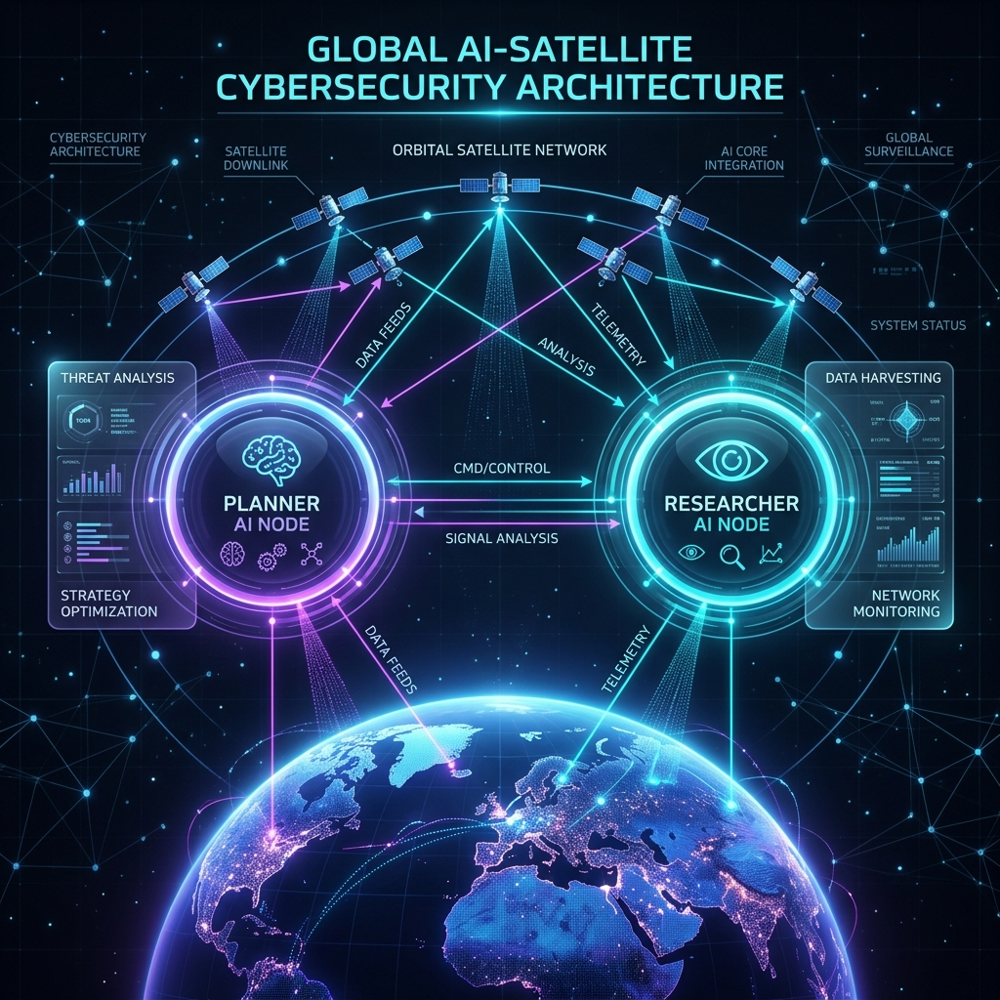

Core
Logic.
A completely decoupled infrastructure that bridges unstructured natural language with militarized geospatial computation tools. At its center lies an autonomous dual-agent protocol.

Dual-Agent Reasoning (Python)
The intelligence core is powered by isolated LLM state machines. The Planner Agent acts as the commander, parsing user directives to determine intent. It delegates extraction to the Researcher Agent, parsing pure text into executable geospatial coordinates.
Geospatial Array
Direct integration with European Space Agency telemetry via Sentinel-2 nodes.
The backend utilizes GeoPandas and visual mathematics to instantly compute Normalized Difference Vegetation Indices (NDVI) and automated cloud-mask matrices.
Zero-Latency Sockets
Bypassing REST bottlenecks, the architecture uses raw TCP sockets for asynchronous buffer streaming directly to the UI.
Native Dashboard
The visual layer is a natively compiled application. Featuring scalable hardware API access, it renders map interfaces at 120 FPS.